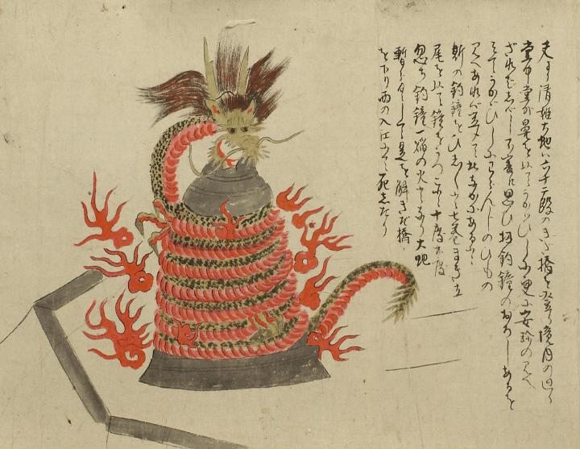

清姫；キヨヒメ，大蛇；ダイジャ，龍；リュウ，炎；ホノオ，釣鐘；ツリガネ

釣鐘に巻きつく清姫大蛇。胴体は釣鐘の下方から周囲を7巻きし、顔は釣鐘の上に突き出て口を大きく開いている。たてがみが逆立ち、2本の角と耳が見えている。蛇腹は赤く、背中側には斑点のような鱗がある。全体を取り巻くように多くの火焔が描かれている。詞書には「夫より清姫大蛇は六十二段のきだ橋を登り境内の廻り堂中堂外鼻を以てうかゞひしに更に安珍の見へざればしばし不審に思ひ扠釣鐘のおろしあるをみてうかゞひしにわらんじのひもの見へあれば定めて此なかにあると斯の釣鐘をひしひしと七巻まき立尾を以て鐘をうつこと十度廿度忽ち釣鐘一焔の火となり大蛇暫らくして是を解きだ橋を下り西の入江にて死したり」とある。
出典：親書誌：U426_nichibunken_0055：道成寺縁起；ドウジョウジエンギ／日付：2006／資源識別子：U426_nichibunken_0055_0007_0000
Copyright (c)2010- International Research Center for Japanese Studies, Kyoto, Japan. All rights reserved.